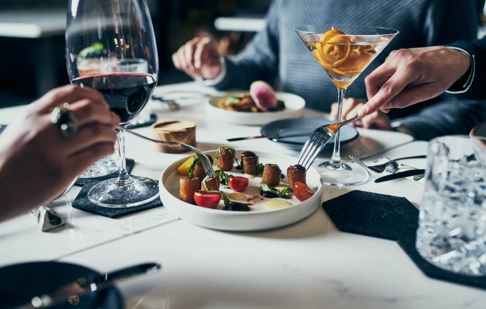

#1

Taft-Diaz
Half-Off Spirits & Wine Daily, Plus $5 Drafts at the Stanton House
209 N Stanton St · Downtown
Half off well house spirits, half off wines by the glass, $5 drafts, and $15 tacos (three for $15) seven days a week, 4 to 6pm. The Stanton House fine-dining room runs the most generous happy hour downtown, and they don't skip a day.
Daily, 4-6pm
- Half off well house spirits
- Half off wines by the glass
- $5 draft beer
- Tacos, 3 for $15
- New York steak and spicy mushroom quesadilla discounts